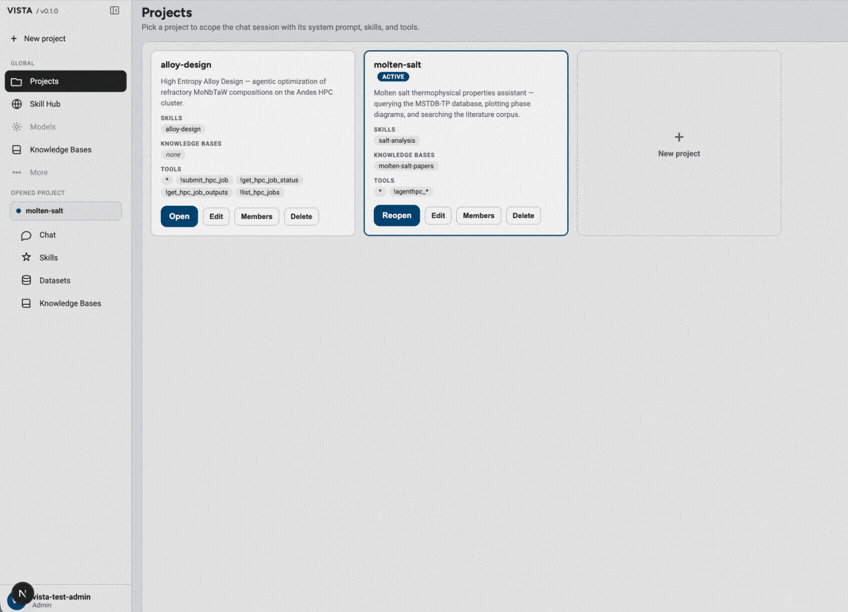

OLCF Research Initiative
Visual Intelligence for Scientific & Tooling Assistant (VISTA) is an agentic platform for modeling and simulation (ModSim) that carries scientists from a research question to running campaigns on OLCF and AmSC resources.
VISTA connects data exploration, hypothesis generation, and simulation in one conversational loop, turning scattered data and jobs into coherent, interpretable scientific insight.
Interface Demonstration

A preliminary interface view showing how research workflows, project context, and analysis tooling may be brought together in a single environment.
Overview
VISTA supports the entire scientific workflow, from data to insight: querying curated data and literature, generating hypotheses, preparing simulation codes, and submitting and tracking HPC jobs.
Composable skills package domain expertise, from molten-salt screening and alloy design to AI model training, so one platform serves many scientific campaigns.
Through guarded tools and service APIs, VISTA reaches Frontier, Odo, Perlmutter, and Lux, moves data with Globus, and keeps scientists approving every campaign plan.
The goal is to help scientists spend less time on infrastructure details and more time generating credible insight from their data.
Motivation
Discovery needs insight, intelligence, and integration in one loop, yet today each lives in a different tool. VISTA removes those handoffs so hypotheses are tested on leadership-class computing today, not next month.
Workflow
Published Material